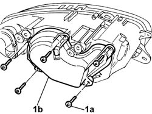
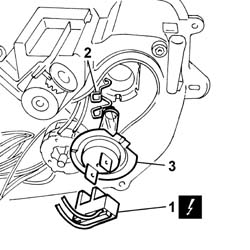
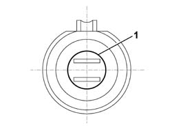

5540B47 BULB FOR MAIN BEAM ONE LH OR RH OF ONE GS DISCHARGE LIGHT CLUSTER RR WITH LIGHT CLUSTER REMOVED
- Path
- Procedures > 55 ELECTRICAL EQUIPMENT > 5540 EXTERIOR LIGHTING > 5540B HEADLAMPS > 5540B47 BULB FOR MAIN BEAM ONE LH OR RH OF ONE GS DISCHARGE LIGHT CLUSTER RR WITH LIGHT CLUSTER REMOVED
- Kind
- repair procedure (removal / refitting; the operation number is the code)
- Applies to
- all engines; all production periods
- Interactive page
- https://sloeber94.github.io/elrnDB-aGt/en/#/125001658
Applies to: all engines; all production periods
 Removing
Removing
 Refitting
RefittingOp. 5540B74 LEFT FRONT LIGHT CLUSTER WITH FOGLAMP R R
(on the left light cluster)
Op. 5540B75 RIGHT FRONT LIGHT CLUSTER WITH FOGLAMP R R
(on the right light cluster)
Op. 5540B76 FRONT LIGHT CLUSTER WITH FOGLAMP ONE LH OR RH R R WITH INTERFERING PARTS REMOVED
1. Undo the fixing bolts (1a) and remove the protective bulb cover (1b).

Applies to: all engines; all production periods
1. Disconnect the electrical connection.
2. Release the bulb retaining clip.
3. Extract the bulb.

Applies to: all engines; all production periods
Refitting
RemovingCheck the condition and the cleanliness of the lamp.
1. Fit the bulb in position as illustrated in the diagram.

Applies to: all engines; all production periods
Attach the bulb retaining clip.
Connect the electrical connection.
Place the protective bulb cover in position and secure it using the bolts.
Op. 5540B76 FRONT LIGHT CLUSTER WITH FOGLAMP ONE LH OR RH R R WITH INTERFERING PARTS REMOVED
Op. 5540B75 RIGHT FRONT LIGHT CLUSTER WITH FOGLAMP R R
(on the right light cluster)
Op. 5540B74 LEFT FRONT LIGHT CLUSTER WITH FOGLAMP R R
(on the left light cluster)
Check that the front light clusters are working.